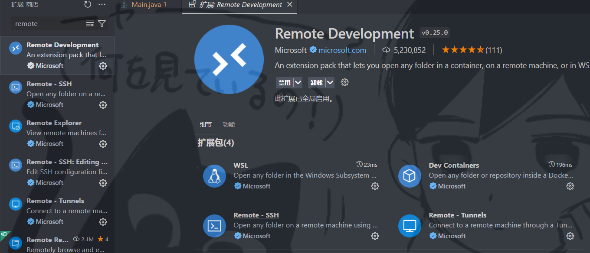

WSL安装及使用指南
WSL是一个可以用于在Windows系统上使用Linux操作系统的软件。
区别于虚拟机，它不需要你为虚拟机额外分配一块永久固定的内存，也没有专门的桌面。它的资源是与你的Windows共享的。
一、安装
在安装之前，先在底部搜索栏中搜索“Windows功能”，进入“启动或关闭Windows功能”页面，选中其中的“适用于Linux的Windows子系统”和“虚拟机平台”

在任意文件夹下打开Powershell（管理员），然后输入命令：
1 | wsl --install |
就可以自动安装wsl以及默认的Linux发行版所需的功能（通常是Ubuntu）

注意：如果你想要选择不同的版本，你可以先使用wsl --list --online命令查看有哪些不同的版本，然后在安装的时候输入以下命令：
1 | wsl --install -d 发行版名称 |
安装完成后需要重启电脑。
重启完电脑后，我们可以使用wsl命令，这个时候它应该就会自动帮我们启动Ubuntu。（当然，如果尝试再次使用刚刚的install命令它也会自动帮我们打开）

二、使用指南
每次打开时，就可以使用wsl来启动Ubuntu。
退出：使用exit命令
如果想要切换不同的版本，可以在wsl后面加参数，例如：wsl -d 发行版名称
当然，一般情况下，我们也可以在powershell上方点击朝下的箭头直接选择对应的版本：

当你不再使用wsl后，你可以使用wsl --shutdown关闭wsl来节省内存空间
当然，我们也可以修改它的安装位置（需要在安装完成之后再手动修改）
修改安装位置
首先，使用wsl --list命令查看当前已经安装的发行版

然后，我们尝试导出这个wsl：
1 | wsl --export Ubuntu D:\wsl\ubuntu.tar |
其中Ubuntu可以修改为自己安装的版本，后面的路径是想要导出的位置，最后需要加上ubuntu.tar，表示导出的这个文件（不然就会提示拒绝访问）

我们也可以在对应的路径找到这个tar包：

接下来我们需要卸载掉之前的分发：
1 | wsl --unregister Ubuntu |

然后我们需要再次导入刚刚导出的那个tar包
1 | wsl --import Ubuntu D:\wsl\WSL\Ubuntu D:\wsl\ubuntu.tar |
其中，前面一个路径是你想要导入的位置，是一个文件夹，并且最后面要额外加上"\Ubuntu"这个字段。后面一个路径是之前tar包的路径

这个时候我们就可以再次登录。

我们会发现账户改成了root。不过不要紧，如果需要修改默认账户的话，只需要vim /etc/wsl.conf来修改配置文件，并且在最上面添加以下内容：
1 | [user] |
使用vscode编辑代码
如果你在Windows上安装了vscode，那么你可以直接通过windows上安装的vscode在wsl中进行编程
首先，我们可以在自己的vscode上安装remote development插件：

然后进入wsl中，在命令行中直接输入以下代码：
1 | code . |
这个时候就可以自动打开安装在windows上的vscode。不过需要注意的是大部分插件都需要重新下载。
然后我们就可以切换到代码页面进行编辑代码了。